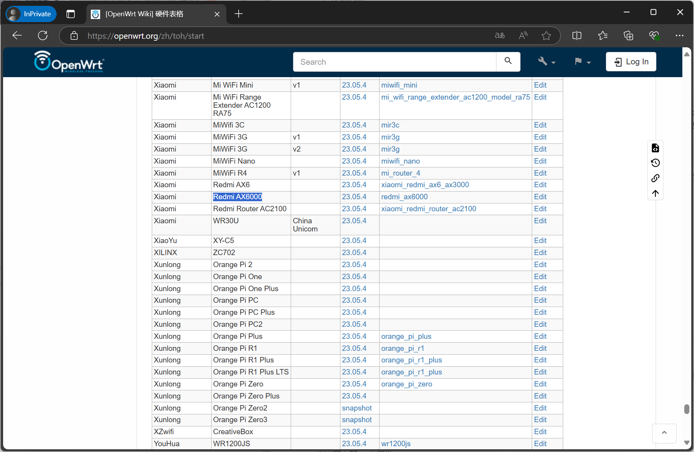
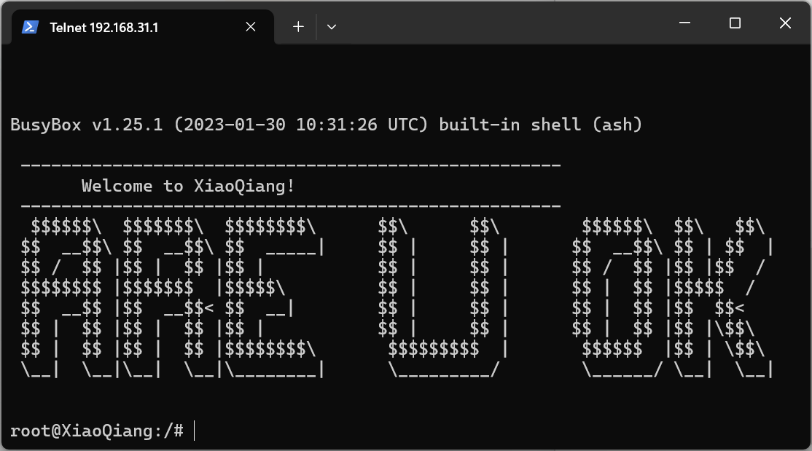
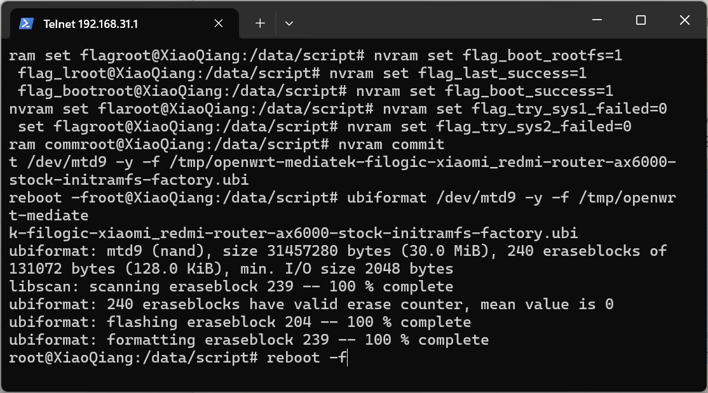
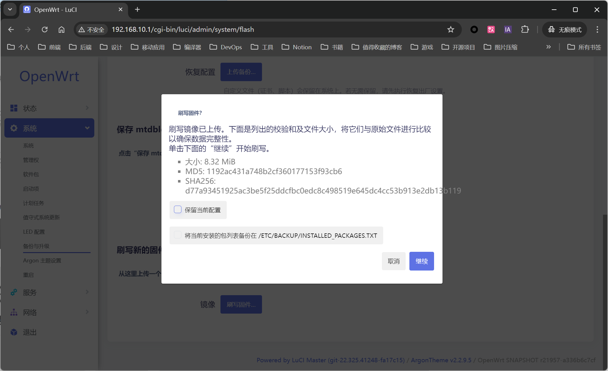
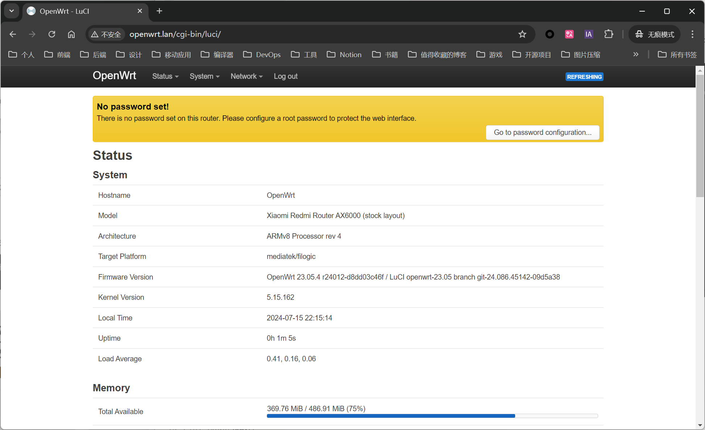
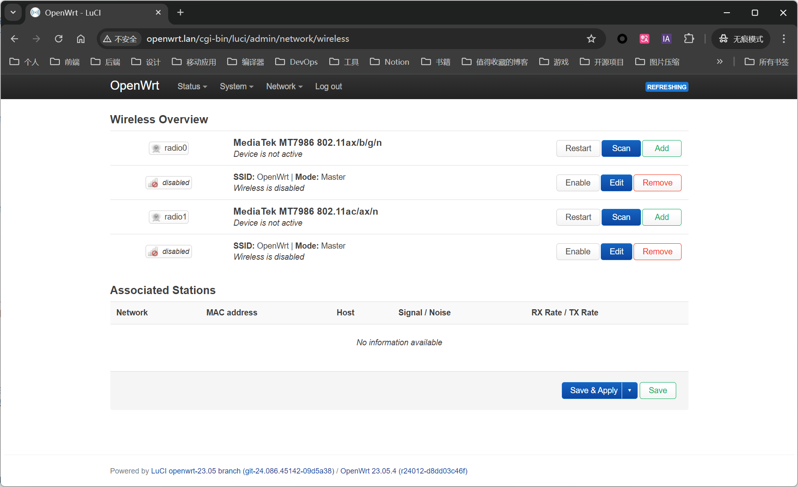

目录
日本运营商给的路由器有点拉跨，而且费用很高，这个价钱完全可以自己买一个很好的路由器了。 AX6000 路由器的 CPU 是 MTK 2021 年发布的 Filogic 830 平台，具体型号是 mt7986a，四核 ARM A53 的架构，主频 2.0GHz。作为普通路由器来说，性能已过剩，为了发挥更强大能力，我准备输入 OpenWrt 固件，解锁更多的功能，这款路由器也在 OpenWrt 官方支持列表中
这里需要注意的是，目前大部分的路由器并没有 OpenWrt 官方固件支持，可以在下面链接查找 OpenWrt 支持的路由器： https://openwrt.org/zh/supported_devices

准备文件
- openwrt-mediatek-filogic-xiaomi_redmi-router-ax6000-stock-initramfs-factory.ubi
- openwrt-23.05.4-mediatek-filogic-xiaomi_redmi-router-ax6000-stock-squashfs-sysupgrade.bin
截至到 24年10月5 号，目前支持的最新版本是 23.05.4 ，你也可以在这里下载最新的固件：https://openwrt.org/toh/xiaomi/redmi_ax6000
解锁 SSH
解锁 Telnet
在解锁 SSH 之前，需要先解锁 Telnet ，先登录路由器后台，进入系统后，复制浏览器中 URL ，比如我这里的是：
http://192.168.31.1/cgi-bin/luci/;stok=b92a9a789ac9d0714b1b1889acd3e5d7/web/home#router
取出其中的 stok 属性
b92a9a789ac9d0714b1b1889acd3e5d7
接下来构建下面的链接，把 stok 的指放入到 stok 属性中，使用浏览器访问：
http://192.168.31.1/cgi-bin/luci/;stok=b92a9a789ac9d0714b1b1889acd3e5d7/api/misystem/set_sys_time?timezone=%20%27%20%3B%20zz%3D%24%28dd%20if%3D%2Fdev%2Fzero%20bs%3D1%20count%3D2%202%3E%2Fdev%2Fnull%29%20%3B%20printf%20%27%A5%5A%25c%25c%27%20%24zz%20%24zz%20%7C%20mtd%20write%20-%20crash%20%3B%20
返回的内容
{
"code": 0
}
接着，再次登录管理面板，复制 stock 放入到 stok 属性中，再次构建下面的链接， 使用浏览器访问：
http://192.168.31.1/cgi-bin/luci/;stok=319125e4d3bb5de553cc910dbbb770cd/api/misystem/set_sys_time?timezone=%20%27%20%3b%20reboot%20%3b%20
返回的内容，这个时候的路由器会重启
{
"code": 0
}
重启之后，再次登录管理面板，获取 stock 后构建链接，然后用浏览器依次访问下面的链接：
http://192.168.31.1/cgi-bin/luci/;stok=8af866bdf8f4c80d423ea554d0ffb41a/api/misystem/set_sys_time?timezone=%20%27%20%3B%20bdata%20set%20telnet_en%3D1%20%3B%20bdata%20set%20ssh_en%3D1%20%3B%20bdata%20set%20uart_en%3D1%20%3B%20bdata%20commit%20%3B%20
http://192.168.31.1/cgi-bin/luci/;stok=8af866bdf8f4c80d423ea554d0ffb41a/api/misystem/set_sys_time?timezone=%20%27%20%3b%20reboot%20%3b%20
这个时候路由器会继续重启，重启完成后，telnet 就解开了。
开启 SSH
telnet 192.168.31.1

接着解锁 SSH，进入 telnet 后，刷入指令：
bdata set boot_wait=on
bdata commit
nvram set ssh_en=1
nvram set telnet_en=1
nvram set uart_en=1
nvram set boot_wait=on
nvram commit
sed -i 's/channel=.*/channel="debug"/g' /etc/init.d/dropbear
/etc/init.d/dropbear restart
echo -e 'admin\nadmin' | passwd root
自启动 SSH
由于解锁后的 SSH，重启就会失效，这里不要断开 Telnet，继续输入指令：
mkdir /data/script && cd /data/script
touch ssh.sh
chmod +x ssh.sh
编辑 ssh.sh 文件
#!/bin/sh
host_key=/etc/dropbear/dropbear_rsa_host_key
host_key_bk=/data/auto_ssh/dropbear_rsa_host_key
if [ -f $host_key_bk ]; then
ln -sf $host_key_bk $host_key
fi
channel=`/sbin/uci get /usr/share/xiaoqiang/xiaoqiang_version.version.CHANNEL`
if [ "$channel" = "release" ]; then
sed -i 's/channel=.*/channel="debug"/g' /etc/init.d/dropbear
/etc/init.d/dropbear restart
fi
if [ ! -s $host_key_bk ]; then
i=0
while [ $i -le 30 ]
do
if [ -s $host_key ]; then
cp -f $host_key $host_key_bk 2>/dev/null
break
fi
let i++
sleep 1s
done
fi
uci set firewall.auto_ssh=include
uci set firewall.auto_ssh.type='script'
uci set firewall.auto_ssh.path='/data/script/ssh.sh'
uci set firewall.auto_ssh.enabled='1'
uci commit firewall
这样重启路由器后，SSH 会自动打开。
刷入过度固件
通过工具连接到路由器 SSH
SSH 账号：root
SSH 密码：admin
上传 openwrt-mediatek-filogic-xiaomi_redmi-router-ax6000-stock-initramfs-factory.ubi 固件到 /tmp 文件夹下：
scp openwrt-mediatek-filogic-xiaomi_redmi-router-ax6000-stock-initramfs-factory.ubi root@192.168.31.1:/tmp
接下来检查系统所在分区：
cat /proc/cmdline
console=ttyS0,115200n1 loglevel=8 firmware=0 factory_mode=1 uart_en=1
检查 firmware 字段，如果为 0，执行：
nvram set boot_wait=on
nvram set uart_en=1
nvram set flag_boot_rootfs=1
nvram set flag_last_success=1
nvram set flag_boot_success=1
nvram set flag_try_sys1_failed=0
nvram set flag_try_sys2_failed=0
nvram commit
ubiformat /dev/mtd9 -y -f /tmp/openwrt-mediatek-filogic-xiaomi_redmi-router-ax6000-stock-initramfs-factory.ubi
reboot -f
如果为 1，执行：
nvram set boot_wait=on
nvram set uart_en=1
nvram set flag_boot_rootfs=0
nvram set flag_last_success=0
nvram set flag_boot_success=1
nvram set flag_try_sys1_failed=0
nvram set flag_try_sys2_failed=0
nvram commit
ubiformat /dev/mtd8 -y -f /tmp/openwrt-mediatek-filogic-xiaomi_redmi-router-ax6000-stock-initramfs-factory.ubi
reboot -f

刷入完毕后，回车重启
刷入 OpenWrt
网线连接到路由器的 LAN 口，进入过度固件后台：
http://192.168.10.1
admin
password
上传 openwrt-23.05.4-mediatek-filogic-xiaomi_redmi-router-ax6000-stock-squashfs-sysupgrade.bin 并刷入

等待路由器重启，账号密码和之前一致，至此刷机结束。
需要注意，部分固件可能没有开启 wifi，需要手动开启